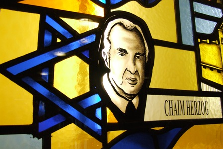
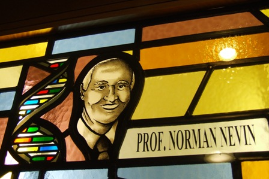
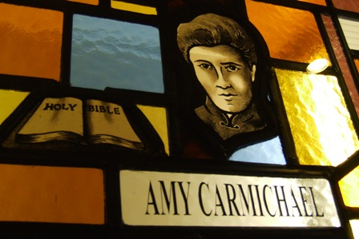
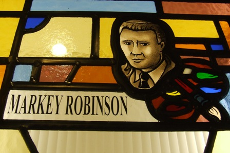
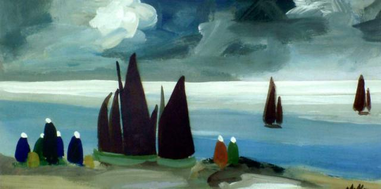
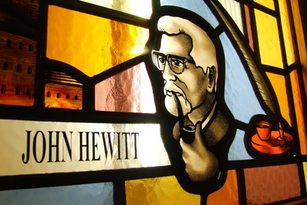

Chaim Herzog (1918-1997)
Israel's Longest Serving President

Herzog was born in 1918 in Belfast, where his father, Dr Isaac Herzog, was rabbi on the Somerton Road. While Chaim was still a child, Isaac was appointed Chief Rabbi of Ireland and the family moved to Dublin. Chaim is remembered there as a former bantam-weight boxing champion!
The family emigrated to Palestine (then under British mandate) in 1935 where his father was elected Chief Rabbi in 1936. Chaim studied law and was called to the English bar in 1942; he also served in the British army during the second world war.
In 1946 he returned to Palestine and was active in the Haganah Jewish underground. He held a number of positions in the newly created State of Israel in 1948, including Ambassador to the United Nations and culminating in that of President (1983-1993). He was also a general in the Israeli army, and as Head of Intelligence is generally recognised as one of the chief architects of Israel's victory in the Six Day War (1967). He died in 1997.
Prof. Norman Nevin
Professor Emeritus in Medical Genetics Queen's University, Belfast

Norman Nevin is Professor of Medical Genetics at The Queen's University of Belfast and consultant clinical geneticist and Head of the Northern Ireland Regional Genetics Service. He is also an advisor to the government on Gene Therapies.
The most striking thing about Prof. Nevin is that he is also a committed Christian. He performs his work as a geneticist as a Christian and this influences his work. He has published over 300 peer-reviewed articles on congenital abnormalities, particularly spina bifida, and on genetic disorders. He has also published books on the subject of Science and Christianity.
Amy Carmichael (1867-1951)
Protecting The Vulnerable

Amy Beatrice Carmichael dedicated her life to missionary work and left behind a rich heritage of books, hymns and poetry. Born on December 16th 1867 in the County Down village of Millisle, she was the eldest of the seven children of David Carmichael, who owned two flour mills in the village, and his wife Catherine.
Brought up a Presbyterian, Amy's life changed after she and her brothers helped a destitute old woman after church service, and, though initially embarrassed to be seen in the woman's company by members of her congregation, heard God's voice encouraging her. One of her brothers recalled that she shut herself in a room at 21 CollegeGardens that afternoon and talked to God and settled once and for all the pattern of her future life. Influenced by Henry Montgomery of the Belfast City Mission, she began to work with the poor of Belfast, particularly the mill girls (known as 'shawlies'), taking them to her local church, Rosemary Street Presbyterian Church, for services. So great were the numbers attending that is soon became clear that a bigger building would be needed for them, and 'The Welcome Hall' in Cambrai Street, North Belfast, was constructed with funds Amy helped to raise. It was later rebuilt and was rededicated in 2007.
Her overseas mission work began in Japan in 1893. She moved to India in 1895 and became a great worker for God in that country for many years. She worked with the young girls and women just as she had done in Belfast.
In 2009, murals were unveiled that depict her life and work on the corner of Cambrai Street and the Crumlin Road.
A blue plaque was erected to Amy at the Welcome Evangelic Church in Cambrai Street in September 2007.
Markey Robinson
Artist

Markey Robinson was born in Belfast in 1918. The son of a house painter, he attended Perth Street Public Elementary School, studied for a time at the Belfast College of Art and visited Paris on a number of occasions. He drew upon his extensive experiences for the diversity of subjects and ideas which he portrayed throughout his life.
Markey was a primitive painter, a colourful character, a man of great complexity; are all descriptions which have characterised Markey over the years.
Below is a picture created by Markey Robinson. This is the general style of his work.

John Hewitt (1907-1987)
Poet

John Harold Hewitt, who was born in Belfast, Northern Ireland, was the most significant Irish poet to emerge before the 1960s generation of Irish poets that included Seamus Heaney, Derek Mahon and Michael Longley. He was appointed the first writer-in-residence at Queen's University Belfast in 1976.
His life and work are celebrated in two prominent ways - the annual John Hewitt International Summer School - and, less conventionally, a Belfast pub is named after him - the John Hewitt Bar and Restaurant, which is situated on Donegall Street, which opened in 1999. The bar was named after him as he officially opened the Belfast Unemployed Resource Centre, which owns the establishment. It is a popular meeting place for local writers, musicians, journalists, students and artists. Both the Belfast Festival at Queen's and the Belfast Film Festival use the venue to stage events.